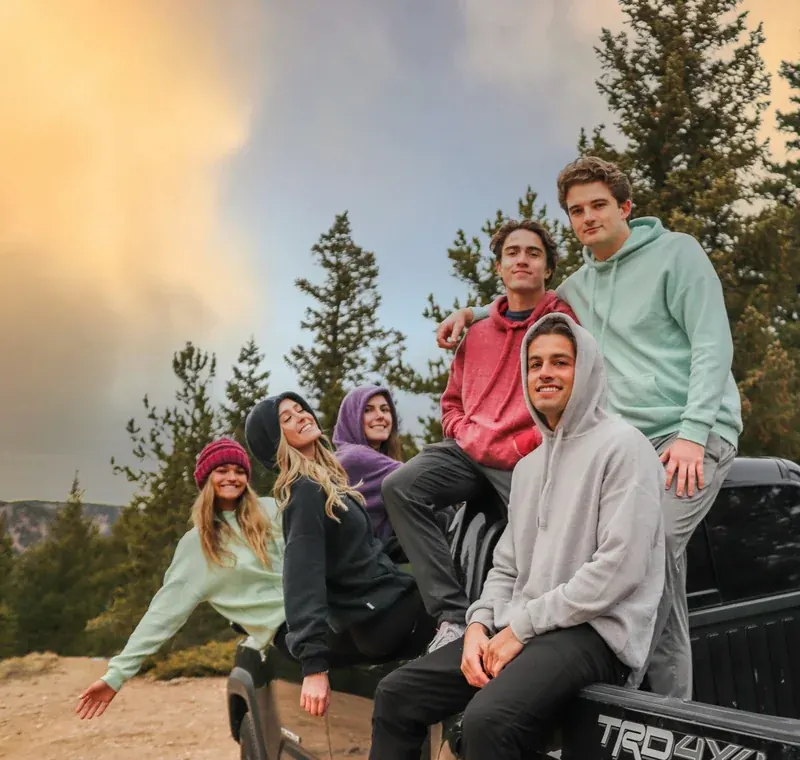

Travel photo journal
Entry: “We stopped here after missing the turn for the coast road. The wind was freezing, but it became my favourite view of the trip.”
Photo journal example & samples
Looking for a photo journal example? A photo journal combines selected photographs with the words that explain what happened, who was there, how it felt or why the moment mattered. It can be a physical notebook, a printed book or a private digital journal on your phone.
You do not need long diary entries. A useful photo journal can be as simple as one photograph plus two or three sentences of context.
Definition
A photo journal is a record of life told through photographs and written context. The photograph gives you the visual evidence; the writing preserves the story around it.
For example, a picture of a beach may tell you where you were, but it will not automatically remember the wrong turn that led there, the person who made you laugh, the song playing in the car or why that ordinary afternoon became important. The journal entry keeps those details attached to the image.
A photo journal differs from an ordinary camera roll because it is curated. You are choosing which photos deserve context rather than trying to document every image you took.
Three photo journal examples

Entry: “We stopped here after missing the turn for the coast road. The wind was freezing, but it became my favourite view of the trip.”
Entry: “Graduation afternoon. Mum took this just after the ceremony, before everyone disappeared for dinner. I was more relieved than excited.”
Entry: “Saturday hike after a stressful week. Nothing dramatic happened; the quiet was the reason I wanted to remember it.”
The useful part of each example is not the length. It is the extra information the photograph cannot supply on its own: the reason, emotion, people, place or small detail that would otherwise fade.
Sample format
| Part | Example | Why it helps |
|---|---|---|
| Photo | A picture of a kitchen table after Sunday lunch | Gives the memory a visual anchor. |
| Date & place | 27 September 2026 · Dublin | Makes the memory easier to place later. |
| People | Mum, Dad, Aoife and me | Names are easy to forget in old photos. |
| Journal note | “Dad made too much food again. We stayed at the table for nearly two hours talking about the old house, and Aoife found the photo album from 2004.” | Preserves the story the image cannot show. |
| Optional tags | family · Sunday lunch · home | Creates another way to find related memories. |
This same structure works for a trip, relationship, baby journal, creative project, university year, renovation, pet, friendship or ordinary day.
Practical method
If you want more prompts after the first few entries, browse the separate 100 photo journal ideas page.
Writing prompts
Write the detail that would not survive in the photo alone. You can use any of these prompts:
There is no requirement to write a full page. Short, specific writing usually ages better than a generic caption such as “great day” because it gives your future self something concrete to reconstruct.
Common formats
| Type | Good for | Typical entry |
|---|---|---|
| Daily photo journal | Ordinary life and low-pressure reflection | One photo and a few lines from the day |
| Travel photo journal | Trips, road trips and holidays | Places, people, discoveries and what happened |
| Family photo journal | Children, parents, traditions and shared history | Milestones plus ordinary moments and conversations |
| Relationship journal | Shared experiences over time | Dates, trips, celebrations and everyday memories |
| Project journal | Creative work, renovations or learning | Progress photos with decisions, setbacks and wins |
| Memory journal | Personal history and meaningful photos | Selected images with enough context to make them searchable later |
Digital photo journaling
You can keep a photo journal in any system that lets you pair photographs with writing and retrieve the entries later. The important part is not the tool; it is keeping the image and its context connected.
Stillkeep is built specifically around this pattern on iPhone. A photo and its written context become a Moment; related Moments can be grouped into Eras such as a trip, relationship, family period or project. Search, tags and Look Back help you return to what you saved, while complete Eras can be exported as PDFs.
For the product-specific workflow, read the private photo journal app guide. For reducing a large camera roll first, use the guide to organising photos and memories on iPhone.
Quick questions
A simple example is one meaningful photograph, the date and place, the people involved and two or three sentences explaining what happened and why you kept the image.
Not quite. A photo album mainly presents images. A photo journal adds written context, reflection or story so the meaning around each selected photograph survives too.
No. One specific sentence can be useful if it captures a name, feeling, conversation or detail the photograph does not contain.
Yes. Digital photo journals can make entries searchable, easier to organise and easier to back up or export, while physical journals offer a tactile notebook or scrapbook experience.
Start with a narrow set of photos that already matters to you: a recent weekend, a short trip, a family event or five camera-roll favourites. Add context to those before expanding.
Keep the story with the photo
Stillkeep is a private photo journal and diary for iPhone, built to keep selected photographs together with the words and life chapters that give them meaning.
See the Stillkeep photo journal app · Browse 100 photo journal ideas · See PDF photobook exports